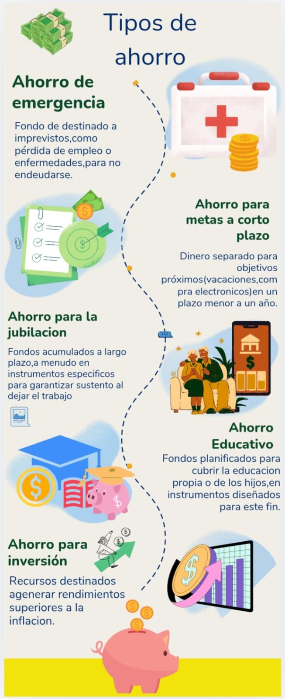
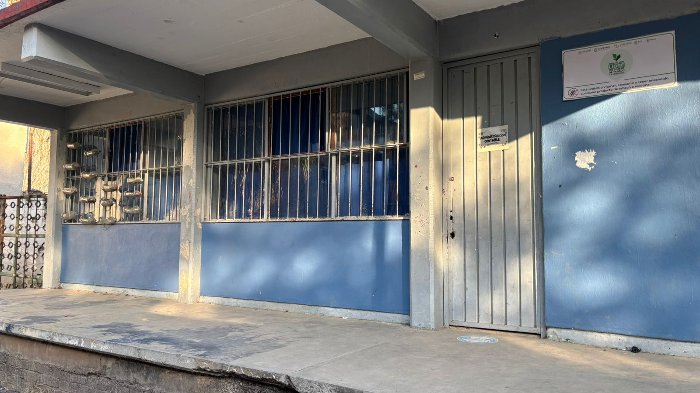

⬅ Volver al InicioEl Taller de Administración Contable es un espacio formativo diseñado para fortalecer los conocimientos y habilidades prácticas en el manejo de procesos financieros y contables dentro de una organización. A través de una metodología dinámica y aplicada, los participantes desarrollan competencias en el registro de operaciones, control de cuentas, elaboración de estados financieros y análisis básico de la información contable para la toma de decisiones.
Este taller integra fundamentos teóricos con ejercicios reales, permitiendo que los asistentes comprendan la importancia de la contabilidad como herramienta estratégica para la administración eficiente de recursos. Además, fomenta el orden, la responsabilidad y el pensamiento analítico, cualidades esenciales en el ámbito laboral y empresarial.
Está dirigido a estudiantes, emprendedores y público interesado en adquirir bases sólidas en administración contable, contribuyendo a su formación académica y al fortalecimiento de su perfil profesional.

Durante su formación, los participantes desarrollan proyectos progresivos que fortalecen su aprendizaje:
Este taller está dirigido a estudiantes interesados en adquirir bases sólidas en administración contable, fortaleciendo su formación académica, su pensamiento analítico y su preparación para el entorno profesional.